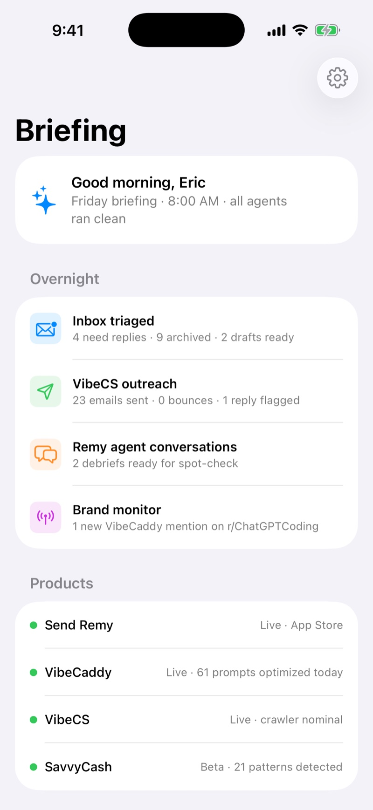
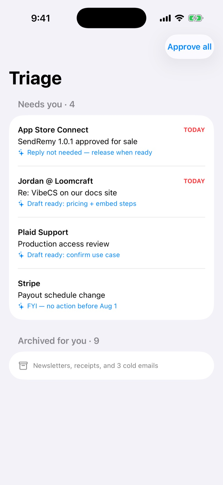

~/products / hermes 02 of 07
Custom Hermes iOS Client
BETAOne SwiftUI client for my personal agent stack. The agents run all night on cron — email triage, outreach, brand monitoring. Hermes is where I read the results and approve the actions, from a phone.


problem
Running seven products solo generates constant, low-judgment ops noise: support email, outreach results, brand mentions, app health. Checking it all means a desk and five dashboards. That's a job for software I already built — the agents existed; they just had no front door.
built
- The daily briefing. One screen at 8:00 AM: what the agents did overnight, what needs me, and per-product status. Five dashboards become one glance.
- Triage with a trigger. Gmail agent drafts replies and archives noise; Hermes shows the queue with suggested actions and an "approve all." Human judgment stays in the loop — but only the judgment part.
- Ask the vault. Natural-language queries against my Obsidian knowledge base — "what did BlockRate teach us?" answered on the train.
- Agents watching agents. Spot-check views into Send Remy conversations and SavvyCash's engine. The portfolio's AI, supervised from one app.
stack
- ios
- Swift 6 · SwiftUI
- agents
- self-hosted automation stack on cron
- integrations
- Gmail API (OAuth) · Supabase · Reddit API · Obsidian vault
status
Private beta — an audience of one, daily. Screenshots above are from the simulator build. It ships publicly if the agent stack ever generalizes beyond me; until then it's the most-used app on my phone, which is its own kind of product-market fit.